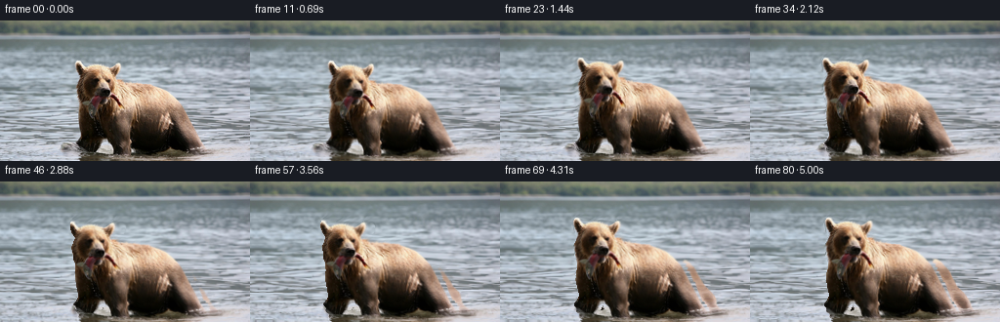
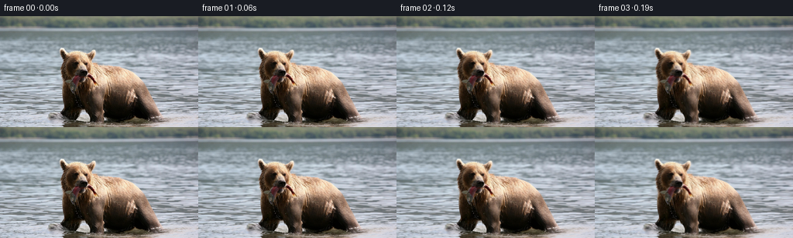

候选 01 · 2026-11-08T21:51:07.746205+00:00 · 点开播放与检查图
inspection.png

transition_check.png

代码变化
--- 上一保存版本
+++ 本次保存版本
@@ -0,0 +1,152 @@
+"""Image-conditioned river/bear animation, implemented with RGB pixel geometry only."""
+from pathlib import Path
+import numpy as np
+from PIL import Image
+from scipy.ndimage import map_coordinates, gaussian_filter, distance_transform_edt, binary_fill_holes
+import artifact_io
+
+ROOT = Path(__file__).resolve().parent
+H, W = 144, 256
+Y, X = np.mgrid[:H, :W].astype(np.float32)
+
+
+def smooth(a, b, x):
+ q = np.clip((x-a)/(b-a), 0., 1.)
+ return q*q*(3-2*q)
+
+
+def sample(a, x, y):
+ if a.ndim == 2:
+ return map_coordinates(a, [y, x], order=1, mode='reflect', prefilter=False)
+ return np.stack([map_coordinates(a[..., k], [y, x], order=1,
+ mode='reflect', prefilter=False) for k in range(3)], -1)
+
+
+def generate():
+ image = np.asarray(Image.open(ROOT/'first_frame.png').convert('RGB'))
+ rgb = image.astype(np.float32)
+ # The brown silhouette is separable from the cool river in the supplied RGB.
+ warm = ((rgb[..., 0]-rgb[..., 2] > 9) |
+ ((rgb.mean(-1)<70) & (rgb[..., 0]>=rgb[..., 2])))
+ warm &= (X>=76)&(X<212)&(Y>=42)
+ silhouette = np.zeros((H,W), bool)
+ for y in range(42, 133):
+ xx = np.flatnonzero(warm[y])
+ if len(xx):
+ if y < 49:
+ silhouette[y] = warm[y]
+ else:
+ silhouette[y,xx.min():xx.max()+1] = True
+ # Transition through the legs and wet reflection, retaining the gap between feet.
+ silhouette[133:] = warm[133:]
+ silhouette = binary_fill_holes(silhouette)
+ for y in range(121,135):
+ lo = int(np.interp(y,[121,125,129,134],[108,104,102,100]))
+ hi = int(np.interp(y,[121,125,129,134],[108,111,114,114]))
+ silhouette[y,lo:hi] = False
+ distance = distance_transform_edt(~silhouette)
+ carry = np.exp(-(distance/6.2)**2).astype(np.float32)
+ carry *= 1-.48*smooth(132,146,Y)
+ matte = gaussian_filter(silhouette.astype(np.float32),.65)
+ # Whole head motion, feathering into the neck rather than moving individual features.
+ head = (1-smooth(83,104,Y))*(1-smooth(122,145,X))
+ foreleft = np.exp(-((X-90)/11.5)**4)*smooth(93,124,Y)*(1-smooth(132,143,Y))
+ foreright = np.exp(-((X-126)/10.0)**4)*smooth(99,128,Y)*(1-smooth(134,146,Y))
+ jaw = np.exp(-((X-103)/13)**4-((Y-82)/5.0)**4)
+ fishtip = np.exp(-((X-122)/4.1)**2-((Y-85)/5.0)**2)
+ depth = smooth(13,144,Y)
+ rng = np.random.default_rng(872)
+ grain = gaussian_filter(rng.normal(size=(H,W)),(.45,1.5)).astype(np.float32)
+ grain /= max(grain.std(),1e-5)
+
+ def flow(t):
+ ramp = 1-np.exp(-2.8*t)
+ gait = 2*np.pi*t/2.05
+ # A small forward wade, with alternating shoulder and foreleg weight transfer.
+ scale = 1+.0065*t
+ dx = (X-139)*(scale-1)-.52*t + .90*np.sin(gait*.5)*ramp
+ dy = (Y-135)*(scale-1)+.22*t+.50*np.sin(gait)*ramp
+ theta = .026*np.sin(2*np.pi*t/3.75)*ramp
+ hx = 3.0*np.sin(2*np.pi*t/4.1)*ramp
+ hy = (-1.1 + 1.70*np.sin(2*np.pi*t/2.7+.22))*ramp
+ dx += head*(hx+(np.cos(theta)-1)*(X-105)-np.sin(theta)*(Y-77))
+ dy += head*(hy+np.sin(theta)*(X-105)+(np.cos(theta)-1)*(Y-77))
+ dx += foreleft*(.6*np.sin(gait))*ramp + foreright*(-.7*np.sin(gait))*ramp
+ dy += foreleft*(-1.65*np.sin(gait))*ramp + foreright*(1.35*np.sin(gait))*ramp
+ # Very slight jaw adjustment and a limp, attached fish-tail movement.
+ chew = .35*np.sin(2*np.pi*t*1.2)*ramp*(.65+.35*np.sin(t*1.7))
+ dy += jaw*chew
+ flick = .52*np.sin(t*8.7)*ramp
+ dx += fishtip*flick*.55
+ dy += fishtip*flick
+ # Advected river texture; long horizontal waves and smaller capillary ripples.
+ wx = (1.15+2.7*depth)*t*smooth(9,26,Y)
+ wx += depth*(.8*(np.sin(Y*.20-t*2.0)-np.sin(Y*.20)) +
+ .40*(np.sin(X*.075+Y*.33-t*2.5)-np.sin(X*.075+Y*.33)))
+ wy = (.25+.65*depth)*smooth(11,32,Y)*(
+ .62*(np.sin(Y*.32+X*.043-t*2.25)-np.sin(Y*.32+X*.043)) +
+ .35*(np.sin(Y*.68-X*.085-t*3.05)-np.sin(Y*.68-X*.085)))
+ # Wet fur reflection follows the animal loosely and breaks up with the surface.
+ reflection = smooth(132,144,Y)*np.exp(-((X-147)/69)**6)
+ wx = wx*(1-reflection*.62) + dx*reflection*.62
+ wy += reflection*.35*(np.sin(X*.24+t*3.2)-np.sin(X*.24))
+ return carry*dx+(1-carry)*wx, carry*dy+(1-carry)*wy
+
+ frames = [image.copy()]
+ for i in range(1,81):
+ t = i/16
+ ramp = 1-np.exp(-2.8*t)
+ u,v = flow(t)
+ # Invert the forward motion. This transports the silhouette as well as its pixels.
+ sx,sy = X-u,Y-v
+ for _ in range(4):
+ sx,sy = X-sample(u,sx,sy),Y-sample(v,sx,sy)
+ frame = sample(rgb,sx,sy)
+ occupied = sample(matte,sx,sy)
+ water = (1-smooth(.08,.65,occupied))*smooth(20,47,Y)
+ # Small, changing reflections remain subordinate to the source texture.
+ light = (np.sin(X*.102+Y*.78-t*3.8)-np.sin(X*.102+Y*.78))
+ light += .48*(np.sin(X*.215-Y*.41-t*2.9)-np.sin(X*.215-Y*.41))
+ frame += (water*(.38+.45*depth)*light)[...,None]*np.array([.80,.95,1.0])
+
+ # Subtle broken bow waves at the wetted outline. No graphic complete ellipses.
+ for j,(cx,cy,phase) in enumerate([(83.,131.,0.),(128.,138.,.6),(200.,132.,1.3)]):
+ cx += -.52*t+.70*np.sin(np.pi*t/2.05)
+ cy += .3*np.sin(t*2.9+phase)
+ for k in range(3):
+ age = (t*.65 + phase + k/3.)%1
+ rx = 5+25*age
+ ry = 1.15+3.6*age
+ rr = np.sqrt(((X-cx)/rx)**2+((Y-cy)/ry)**2)
+ ring = np.exp(-((rr-1)*ry/.47)**2)
+ fragments = smooth(-.18,.65,np.sin(X*.73+Y*.51+j*2+age*4)+.25*grain)
+ ring *= fragments*(np.sin(np.pi*age)**1.4)*water*ramp
+ frame += ring[...,None]*np.array([8.8,9.5,10.2])
+ trough = np.exp(-((rr-1.20)*ry/.52)**2)*water*ramp
+ frame -= (trough*.25*fragments*np.sin(np.pi*age))[...,None]*np.array([6.,6.,5.])
+ # A few subpixel droplets from a planted forepaw, with gravity and fading.
+ for side,base_x,base_y,start in [(0,79.,131.,.38),(1,204.,133.,1.40)]:
+ for j in range(5):
+ age = (t-start-j*.072)%2.05
+ duration = .57+.033*j
+ if age < duration:
+ q = age/duration
+ outward = -1 if side==0 else 1
+ px = base_x-.52*t + outward*(1.3+j*.73)*q
+ py = base_y - (13.5+j*.9)*q*(1-q)
+ size = .36+.05*(j%3)
+ spot = np.exp(-.5*((X-px)/size)**2-.5*((Y-py)/(size*1.25))**2)
+ alpha = spot*(np.sin(np.pi*q)**.65)*.34*ramp
+ frame = frame*(1-alpha[...,None])+np.array([209.,217.,220.])*alpha[...,None]
+ frames.append(np.clip(np.rint(frame),0,255).astype(np.uint8))
+ frames = np.stack(frames)
+ assert frames.shape == (81,144,256,3)
+ assert np.array_equal(frames[0],image)
+ artifact_io.save(frames,ROOT)
+ delta = np.abs(np.diff(frames.astype(np.float32),axis=0))
+ print('Saved',frames.shape,frames.dtype)
+ print('Adjacent RGB mean absolute change:',delta.mean(), 'max frame mean',delta.mean((1,2,3)).max())
+ print('First-frame exact:',np.array_equal(frames[0],image))
+
+if __name__ == '__main__':
+ generate()
候选 03 · 2026-11-08T21:51:37.119826+00:00 · 点开播放与检查图
inspection.png

transition_check.png

代码变化
--- 上一保存版本
+++ 本次保存版本
@@ -45,7 +45,7 @@
hi = int(np.interp(y,[121,125,129,134],[108,111,114,114]))
silhouette[y,lo:hi] = False
distance = distance_transform_edt(~silhouette)
- carry = np.exp(-(distance/6.2)**2).astype(np.float32)
+ carry = np.exp(-(distance/9.0)**2).astype(np.float32)
carry *= 1-.48*smooth(132,146,Y)
matte = gaussian_filter(silhouette.astype(np.float32),.65)
# Whole head motion, feathering into the neck rather than moving individual features.
@@ -80,7 +80,7 @@
dx += fishtip*flick*.55
dy += fishtip*flick
# Advected river texture; long horizontal waves and smaller capillary ripples.
- wx = (1.15+2.7*depth)*t*smooth(9,26,Y)
+ wx = (.20+.65*depth)*t*smooth(9,26,Y)
wx += depth*(.8*(np.sin(Y*.20-t*2.0)-np.sin(Y*.20)) +
.40*(np.sin(X*.075+Y*.33-t*2.5)-np.sin(X*.075+Y*.33)))
wy = (.25+.65*depth)*smooth(11,32,Y)*(
@@ -93,14 +93,20 @@
return carry*dx+(1-carry)*wx, carry*dy+(1-carry)*wy
frames = [image.copy()]
+ min_jacobian = 1.
+ max_inverse_error = 0.
for i in range(1,81):
t = i/16
ramp = 1-np.exp(-2.8*t)
u,v = flow(t)
+ uy,ux = np.gradient(u)
+ vy,vx = np.gradient(v)
+ min_jacobian = min(min_jacobian,float(np.min((1+ux)*(1+vy)-uy*vx)))
# Invert the forward motion. This transports the silhouette as well as its pixels.
sx,sy = X-u,Y-v
- for _ in range(4):
+ for _ in range(12):
sx,sy = X-sample(u,sx,sy),Y-sample(v,sx,sy)
+ max_inverse_error = max(max_inverse_error,float(np.max(np.hypot(sx+sample(u,sx,sy)-X,sy+sample(v,sx,sy)-Y))))
frame = sample(rgb,sx,sy)
occupied = sample(matte,sx,sy)
water = (1-smooth(.08,.65,occupied))*smooth(20,47,Y)
@@ -144,6 +150,7 @@
assert np.array_equal(frames[0],image)
artifact_io.save(frames,ROOT)
delta = np.abs(np.diff(frames.astype(np.float32),axis=0))
+ print('Minimum forward-warp Jacobian:',min_jacobian,'max inverse residual:',max_inverse_error)
print('Saved',frames.shape,frames.dtype)
print('Adjacent RGB mean absolute change:',delta.mean(), 'max frame mean',delta.mean((1,2,3)).max())
print('First-frame exact:',np.array_equal(frames[0],image))
命令 6 · 2026-11-08T21:51:04.940062+00:00/bin/bash -lc "cat > generate.py <<'PY'
\"\"\"Image-conditioned river/bear animation, implemented with RGB pixel geometry only.\"\"\"
from pathlib import Path
import numpy as np
from PIL import Image
from scipy.ndimage import map_coordinates, gaussian_filter, distance_transform_edt, binary_fill_holes
import artifact_io
ROOT = Path(__file__).resolve().parent
H, W = 144, 256
Y, X = np.mgrid[:H, :W].astype(np.float32)
def smooth(a, b, x):
q = np.clip((x-a)/(b-a), 0., 1.)
return q*q*(3-2*q)
def sample(a, x, y):
if a.ndim == 2:
return map_coordinates(a, [y, x], order=1, mode='reflect', prefilter=False)
return np.stack([map_coordinates(a[..., k], [y, x], order=1,
mode='reflect', prefilter=False) for k in range(3)], -1)
def generate():
image = np.asarray(Image.open(ROOT/'first_frame.png').convert('RGB'))
rgb = image.astype(np.float32)
# The brown silhouette is separable from the cool river in the supplied RGB.
warm = ((rgb[..., 0]-rgb[..., 2] > 9) |
((rgb.mean(-1)<70) & (rgb[..., 0]>=rgb[..., 2])))
warm &= (X>=76)&(X<212)&(Y>=42)
silhouette = np.zeros((H,W), bool)
for y in range(42, 133):
xx = np.flatnonzero(warm[y])
if len(xx):
if y < 49:
silhouette[y] = warm[y]
else:
silhouette[y,xx.min():xx.max()+1] = True
# Transition through the legs and wet reflection, retaining the gap between feet.
silhouette[133:] = warm[133:]
silhouette = binary_fill_holes(silhouette)
for y in range(121,135):
lo = int(np.interp(y,[121,125,129,134],[108,104,102,100]))
hi = int(np.interp(y,[121,125,129,134],[108,111,114,114]))
silhouette[y,lo:hi] = False
distance = distance_transform_edt(~silhouette)
carry = np.exp(-(distance/6.2)**2).astype(np.float32)
carry *= 1-.48*smooth(132,146,Y)
matte = gaussian_filter(silhouette.astype(np.float32),.65)
# Whole head motion, feathering into the neck rather than moving individual features.
head = (1-smooth(83,104,Y))*(1-smooth(122,145,X))
foreleft = np.exp(-((X-90)/11.5)**4)*smooth(93,124,Y)*(1-smooth(132,143,Y))
foreright = np.exp(-((X-126)/10.0)**4)*smooth(99,128,Y)*(1-smooth(134,146,Y))
jaw = np.exp(-((X-103)/13)**4-((Y-82)/5.0)**4)
fishtip = np.exp(-((X-122)/4.1)**2-((Y-85)/5.0)**2)
depth = smooth(13,144,Y)
rng = np.random.default_rng(872)
grain = gaussian_filter(rng.normal(size=(H,W)),(.45,1.5)).astype(np.float32)
grain /= max(grain.std(),1e-5)
def flow(t):
ramp = 1-np.exp(-2.8*t)
gait = 2*np.pi*t/2.05
# A small forward wade, with alternating shoulder and foreleg weight transfer.
scale = 1+.0065*t
dx = (X-139)*(scale-1)-.52*t + .90*np.sin(gait*.5)*ramp
dy = (Y-135)*(scale-1)+.22*t+.50*np.sin(gait)*ramp
theta = .026*np.sin(2*np.pi*t/3.75)*ramp
hx = 3.0*np.sin(2*np.pi*t/4.1)*ramp
hy = (-1.1 + 1.70*np.sin(2*np.pi*t/2.7+.22))*ramp
dx += head*(hx+(np.cos(theta)-1)*(X-105)-np.sin(theta)*(Y-77))
dy += head*(hy+np.sin(theta)*(X-105)+(np.cos(theta)-1)*(Y-77))
dx += foreleft*(.6*np.sin(gait))*ramp + foreright*(-.7*np.sin(gait))*ramp
dy += foreleft*(-1.65*np.sin(gait))*ramp + foreright*(1.35*np.sin(gait))*ramp
# Very slight jaw adjustment and a limp, attached fish-tail movement.
chew = .35*np.sin(2*np.pi*t*1.2)*ramp*(.65+.35*np.sin(t*1.7))
dy += jaw*chew
flick = .52*np.sin(t*8.7)*ramp
dx += fishtip*flick*.55
dy += fishtip*flick
# Advected river texture; long horizontal waves and smaller capillary ripples.
wx = (1.15+2.7*depth)*t*smooth(9,26,Y)
wx += depth*(.8*(np.sin(Y*.20-t*2.0)-np.sin(Y*.20)) +
.40*(np.sin(X*.075+Y*.33-t*2.5)-np.sin(X*.075+Y*.33)))
wy = (.25+.65*depth)*smooth(11,32,Y)*(
.62*(np.sin(Y*.32+X*.043-t*2.25)-np.sin(Y*.32+X*.043)) +
.35*(np.sin(Y*.68-X*.085-t*3.05)-np.sin(Y*.68-X*.085)))
# Wet fur reflection follows the animal loosely and breaks up with the surface.
reflection = smooth(132,144,Y)*np.exp(-((X-147)/69)**6)
wx = wx*(1-reflection*.62) + dx*reflection*.62
wy += reflection*.35*(np.sin(X*.24+t*3.2)-np.sin(X*.24))
return carry*dx+(1-carry)*wx, carry*dy+(1-carry)*wy
frames = [image.copy()]
for i in range(1,81):
t = i/16
ramp = 1-np.exp(-2.8*t)
u,v = flow(t)
# Invert the forward motion. This transports the silhouette as well as its pixels.
sx,sy = X-u,Y-v
for _ in range(4):
sx,sy = X-sample(u,sx,sy),Y-sample(v,sx,sy)
frame = sample(rgb,sx,sy)
occupied = sample(matte,sx,sy)
water = (1-smooth(.08,.65,occupied))*smooth(20,47,Y)
# Small, changing reflections remain subordinate to the source texture.
light = (np.sin(X*.102+Y*.78-t*3.8)-np.sin(X*.102+Y*.78))
light += .48*(np.sin(X*.215-Y*.41-t*2.9)-np.sin(X*.215-Y*.41))
frame += (water*(.38+.45*depth)*light)[...,None]*np.array([.80,.95,1.0])
# Subtle broken bow waves at the wetted outline. No graphic complete ellipses.
for j,(cx,cy,phase) in enumerate([(83.,131.,0.),(128.,138.,.6),(200.,132.,1.3)]):
cx += -.52*t+.70*np.sin(np.pi*t/2.05)
cy += .3*np.sin(t*2.9+phase)
for k in range(3):
age = (t*.65 + phase + k/3.)%1
rx = 5+25*age
ry = 1.15+3.6*age
rr = np.sqrt(((X-cx)/rx)**2+((Y-cy)/ry)**2)
ring = np.exp(-((rr-1)*ry/.47)**2)
fragments = smooth(-.18,.65,np.sin(X*.73+Y*.51+j*2+age*4)+.25*grain)
ring *= fragments*(np.sin(np.pi*age)**1.4)*water*ramp
frame += ring[...,None]*np.array([8.8,9.5,10.2])
trough = np.exp(-((rr-1.20)*ry/.52)**2)*water*ramp
frame -= (trough*.25*fragments*np.sin(np.pi*age))[...,None]*np.array([6.,6.,5.])
# A few subpixel droplets from a planted forepaw, with gravity and fading.
for side,base_x,base_y,start in [(0,79.,131.,.38),(1,204.,133.,1.40)]:
for j in range(5):
age = (t-start-j*.072)%2.05
duration = .57+.033*j
if age < duration:
q = age/duration
outward = -1 if side==0 else 1
px = base_x-.52*t + outward*(1.3+j*.73)*q
py = base_y - (13.5+j*.9)*q*(1-q)
size = .36+.05*(j%3)
spot = np.exp(-.5*((X-px)/size)**2-.5*((Y-py)/(size*1.25))**2)
alpha = spot*(np.sin(np.pi*q)**.65)*.34*ramp
frame = frame*(1-alpha[...,None])+np.array([209.,217.,220.])*alpha[...,None]
frames.append(np.clip(np.rint(frame),0,255).astype(np.uint8))
frames = np.stack(frames)
assert frames.shape == (81,144,256,3)
assert np.array_equal(frames[0],image)
artifact_io.save(frames,ROOT)
delta = np.abs(np.diff(frames.astype(np.float32),axis=0))
print('Saved',frames.shape,frames.dtype)
print('Adjacent RGB mean absolute change:',delta.mean(), 'max frame mean',delta.mean((1,2,3)).max())
print('First-frame exact:',np.array_equal(frames[0],image))
if __name__ == '__main__':
generate()
PY
python generate.py"exit 0 命令 7 · 2026-11-08T21:51:34.692233+00:00/bin/bash -lc "python - <<'PY'
p='generate.py'
s=open(p).read().replace('distance/6.2','distance/9.0').replace('(1.15+2.7*depth)*t','(.20+.65*depth)*t')
s=s.replace('frames = [image.copy()]','frames = [image.copy()]\\n min_jacobian = 1.\\n max_inverse_error = 0.')
s=s.replace('u,v = flow(t)','u,v = flow(t)\\n uy,ux = np.gradient(u)\\n vy,vx = np.gradient(v)\\n min_jacobian = min(min_jacobian,float(np.min((1+ux)*(1+vy)-uy*vx)))')
s=s.replace('for _ in range(4):','for _ in range(12):')
s=s.replace('frame = sample(rgb,sx,sy)','max_inverse_error = max(max_inverse_error,float(np.max(np.hypot(sx+sample(u,sx,sy)-X,sy+sample(v,sx,sy)-Y))))\\n frame = sample(rgb,sx,sy)')
s=s.replace(\"print('Saved',frames.shape,frames.dtype)\",\"print('Minimum forward-warp Jacobian:',min_jacobian,'max inverse residual:',max_inverse_error)\\n print('Saved',frames.shape,frames.dtype)\")
open(p,'w').write(s)
PY
python generate.py"exit 0